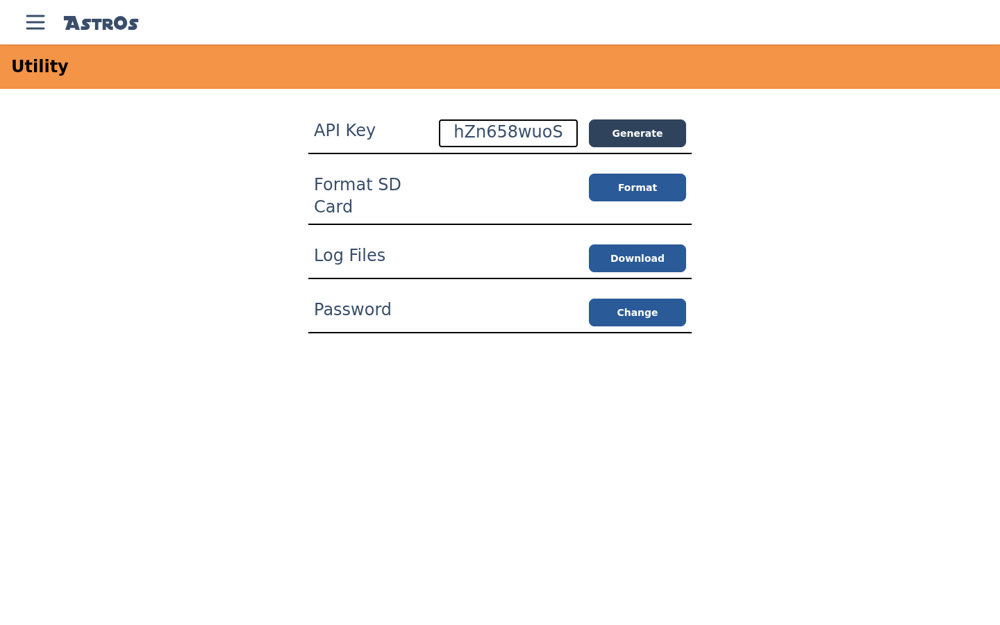

Housekeeping.
The Utility screen collects the odds and ends — the key that lets a physical remote talk to the server, SD-card maintenance, log downloads and your password.

§API Key
An AstrOs.Screen touchscreen remote authenticates with this key to pull the
remote layout and fire actions. Select
Generate to create one, then enter it on the Screen device. Generating a new key
replaces the old one, so any remote using the old key stops working until you update it.
§Format SD Card
Format wipes the SD card in one or more nodes — the card that holds each node's scripts, configuration and staged firmware (the one you prepped in Flashing Firmware). Pick the controllers in the dialog and the format is queued to run on the droid. Afterwards, re-Sync your Modules configuration and re-upload scripts so the node has its data back.
§Log Files
Download grabs the server's logs as astros_logs.zip. If you hit a
bug, this is what to attach to a GitHub issue.
§Password
Change updates the password you log in
with. You'll need the current password, and the new one must be at least 8 characters. If you're
still on the default password, change it now.